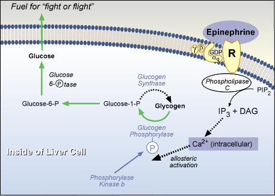

The Biology Project Home > Biochemistry > Regulation of Carbohydrate Metabolism > Problem Sets Question 7: A Secondary Action of Epinephrine in LiverTutorial to help answer the question. To which additional adrenergic receptor subtype does epinephrine bind in order to further activate glycogen phosphorylase in liver?
TutorialThink of this as an auxiliary action of epinephrine to boost the action of glycogen phosphorylase in a true emergency. Recall that phosphorylase kinase is the enzyme that phosphorylates and activates glycogen phosphorylase, and that phosphorylase kinase b, the inactive form, can be phosphorylated to phosphorylase kinase "a" (active) as part of a phosphorylation cascade initiated by cAMP and protein kinase A.A part of the regulation you may have forgotten is that intracellular calcium can activate phosphorylase kinase b even in the absence of the phosphorylation signal. This effect would then activate even those molecules of phosphorylase kinase that did not become phosphorylated in the cascade, creating an additive effect to boost glycogen hydrolysis. Intracellular calcium would be naturally released in muscle with "fight or flight" contractions to accomplish this additive activation, but how can this happen in liver? The answer is a second type of adrenergic receptor to which epinephrine can bind to boost intracellular calcium. This occurs via the Gq/phospholipase C/IP3 pathway. The only remaining issue: which adrenergic receptor type is linked to Gq? Secondary Action of Epinephrine in Liver  Problem 6 | Answer | Problem
8 The University of Arizona March 16, 2001 Revised: August, 2004 Contact the Development Team http://www.biology.arizona.edu |